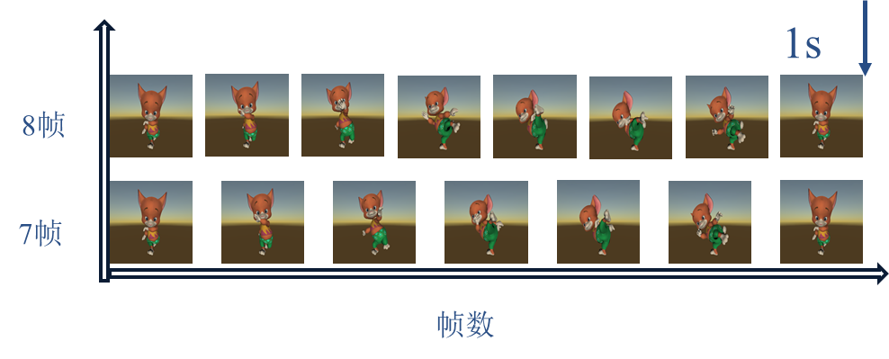
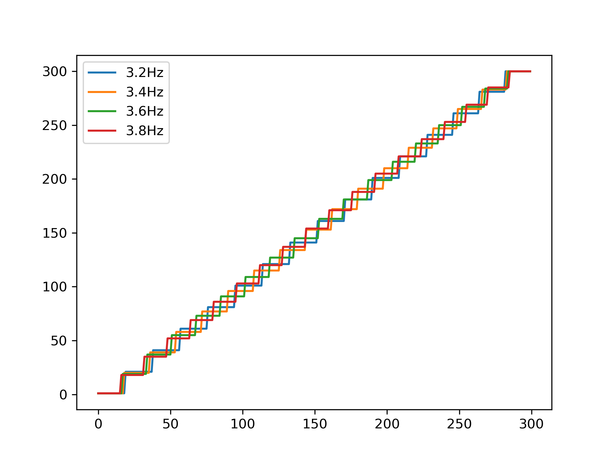

视频刺激研究报告电子文档
完成视频刺激研究
目标
系统性地研究视频刺激，测试各类相关的刺激参数对于脑电诱发的影响，评估视频刺激的使用规则与适用目标：
内容：
①进行视频刺激的多目标线实验，采集 15 人被试信号，验证视频刺激具有普遍适用性：
② 优化视频刺激的刺激频率、大小、内容，总结视频刺激的使用规则和最佳配置：
③ 根据最佳参数设计一套视频刺激的在线编解码系统，采集 10人信号并验证；
④评估该技术后续开发的可行性。
交付成果：
①视频刺激在线编解码系统 （MATLAB 代码）
②视频刺激的研究报告电子文档（多目标离线数据结果分析、优化过程、最佳配置与在线结果）
目录
1. 编码原理
1.1 电影帧率
电影通常以每秒24帧的速率播放，这被称为标准电影帧率。这一帧率在很大程度上被认为是足够流畅，使人眼中的图像看起来连贯而不卡顿。这与人眼的视觉特性有关。人眼在观看电影或视频时，会出现视觉暂留现象，即眼睛会将连续的静止图像保持在视觉记忆中一小段时间。因此，当画面在24帧的速率下切换时，人眼会对前一帧的图像保持一段时间的感知，然后再转向下一帧。这种暂留效应在某种程度上模糊了帧与帧之间的转换，创造出连贯的视觉体验。
1.2 动画里的一拍一和一拍二到底是什么
一拍N简单的说就是一张画在画面上停留几个1/24秒。是动画制作中一种节省工作量的方法，因为每秒八张画(也就是一拍三)，就能最低限度的动作的连贯，为了原画师的生命安全，手绘动画很少使用一拍一。
1.3 电影帧率与显示器帧率不同
电影帧率与显示器帧率不同的情况下，可能会出现一些视觉效果和技术问题。电影通常以24帧/秒的帧率制作，而显示器的刷新率可能是60Hz、120Hz或其他不同的值。这种不匹配可能会导致以下问题：
- 画面不流畅：如果电影以24帧/秒的帧率播放在60Hz的显示器上，可能会出现画面不够流畅的感觉，尤其是在快速移动的场景中。
- 画面撕裂：当电影帧率与显示器刷新率不匹配时，可能会出现画面撕裂，即画面被分成不同的部分，导致视觉上的不连贯。
- 快进效应：如果将24帧/秒的电影播放在120Hz的显示器上，可能会出现“快进”效应，因为每秒显示的帧数比电影的原始帧率多。
为了解决这些问题，一些技术和方法可以被应用：
- V-Sync 和帧率匹配：使用V-Sync等技术，将电影的帧率与显示器的刷新率匹配，从而减少画面撕裂和快进效应。
- 插帧技术：某些显示器和设备支持插帧技术，可以将24帧的电影转换成60Hz或120Hz的显示，以提高画面流畅度。
- 专用播放器设置：一些视频播放器软件允许用户调整播放速度或帧率，以使电影适应显示器的刷新率。
- 高级显示技术：一些高级显示技术，如G-Sync和FreeSync，可以根据输入信号的帧率来调整显示器的刷新率，以提供更平滑的播放体验。
总之，电影帧率与显示器帧率不同可能会导致一些视觉问题，但通过使用合适的技术和设置，可以减少这些问题，以获得更好的观影体验。
1.4 SSVEP原理
SSVEP（Steady-State Visually Evoked Potential）是一种脑电信号，它是由视觉刺激引发的稳态生物电位。在感兴趣的频率范围内，当一个人持续注视一个周期性刺激（如闪烁的光源）时，大脑会产生与刺激频率相对应的电位变化，即SSVEP。这种信号常常被用于脑机接口（BCI）技术，尤其在视觉注意控制方面应用广泛。以下是SSVEP响应特征的一些重要方面：
- 频率特定响应：在SSVEP任务中，响应的最显著特征是在刺激频率及其谐波频率处产生电位增强。例如，如果刺激频率是10 Hz，那么大脑可能会产生10 Hz、20 Hz、30 Hz等频率处的增强响应。这种频率特定响应是SSVEP的核心特征。
- 调制深度：响应的幅度或调制深度与刺激的亮度或对比度有关，通常情况下，刺激越明显，产生的SSVEP响应幅度越大。
- 频率选择性：大脑对不同频率的刺激有不同的响应特点。通常，响应频率越高，SSVEP响应的幅度也越高。这使得较高的频率更容易检测。
- 脑区活动：不同的脑区可能会在不同的频率范围内产生SSVEP响应。脑电极在头皮上的位置可以影响响应的强度和空间分布。
- 稳态性：与其他事件相关电位不同，SSVEP是稳态信号，即它在刺激持续存在时保持稳定。这使得SSVEP在脑机接口应用中具有优势，因为它可以在持续注视刺激的情况下持续提供可用的信号。
- 频谱分析：对脑电信号进行频谱分析可以揭示SSVEP的频率特征。通过识别主要的频率分量，可以确定被试者对特定刺激频率的响应情况。
总体而言，SSVEP的响应特征包括频率特定性、调制深度、频率选择性、脑区活动和稳态性。这些特征使得SSVEP成为一种广泛用于脑机接口和神经生理学研究的有用工具。
1.5 RSVP原理
RSVP（Rapid Serial Visual Presentation）是一种通过高速连续呈现视觉刺激，例如单词或图像，以提高信息处理效率的技术。RSVP的响应特征主要涉及被试者在此过程中产生的脑电信号或行为反应。以下是RSVP的响应特征：
- P300成分：在RSVP的脑电图（EEG）中，通常可以看到P300成分的存在。P300是一种事件相关电位，表示对于意外、显著或引人注意的刺激的脑电响应。在RSVP中，P300通常在被试者注意到特定刺激时产生，可以用于检测被试者对特定单词或图像的注意。
- N170成分：N170是一种与人脸或物体识别相关的事件相关电位。在RSVP中，N170成分可能在被试者看到具有特定含义的刺激（例如单词）时出现。它可能与对刺激的分类和识别过程有关。
- 注意集中反应：RSVP中的刺激速度非常快，需要被试者高度集中注意力才能跟上。因此，被试者的注意力水平和注意力分配情况可能在响应中得到体现。注意力过高或分散可能会影响到脑电信号的特点。
- 阅读速度和准确性：RSVP中的呈现速度可以根据被试者的能力进行调整。被试者的阅读速度和准确性可以反映其在RSVP任务中的表现。
- 错过率：在高速呈现的情况下，被试者可能会错过一些刺激。记录错过的刺激数量可以提供一个指标，反映了被试者在RSVP任务中的集中程度和响应能力。
综上所述，RSVP的响应特征涵盖了脑电信号（如P300、N170等）以及行为表现（注意集中、阅读速度、准确性等）。这些特征可以帮助研究人员理解被试者在高速连续刺激任务中的认知和神经机制。
1.6 思路
以下内容均以60Hz刷新率的显示器为例
考虑使用低帧率的动画作为刺激，比如七帧和八帧两个视频，每帧图片分别呈现$1/7$ 和 $1/8$ 秒。呈现的时间不同，在大脑中激活的响应应该不同。考虑使用任务相关成分分析（TRCA）算法来提取不同的成分。
2. 刺激生成
首先，为了确保诱发出稳定的响应，使用PsychtoolBox工具箱编写刺激代码。PTB可以精准的控制每一帧的图像刷新。因此，使用PTB设置刷新率为60Hz, 并在60Hz刷新率的基础上通过人为的补帧技术呈现不同帧率的动画。
2.1 code
def divide_sequence(start, end, num_parts):
sequence = list(range(start, end+1))
part_size = len(sequence) // num_parts
remainder = len(sequence) % num_parts
parts = []
index = 0
for i in range(num_parts):
size = part_size + 1 if i < remainder else part_size
parts.append(sequence[index:index+size])
index += size
return parts
def gen_code(start, end, num_parts):
# start = 1
# end = 720
# num_parts = 12
result = divide_sequence(start, end, num_parts)
copy_counts = [len(result[i]) for i in range(num_parts)]
# print(copy_counts,len(copy_counts))
result = divide_sequence(start, end, num_parts-1)
sequence = [result[i][0] for i in range(num_parts-1)]
sequence .append(end)
# print(sequence,len(sequence))
result_sequence = []
# 遍历序列和复制次数列表
for num, count in zip(sequence, copy_counts):
result_sequence.extend([num] * count) # 将当前数复制指定次数并添加到结果序列中
return copy_counts,sequence,result_sequence
2.2 生成5s 60Hz的刺激序列
import scipy.io as sio
import matplotlib.pyplot as plt
import numpy as np
%run tools.py
my_result_sequence=[]
my_copy_counts=[]
my_sequence=[]
frame_rate=60
start = 1
t=5
n_target=30
end = frame_rate * t
for i in range(n_target):
num_parts = 15+i
copy_counts,sequence,result_sequence = gen_code(start, end, num_parts)
# if i==0:
# plt.figure()
# plt.plot(result_sequence)
# plt.title(str(len(copy_counts)/t)+'Hz')
my_result_sequence.append(result_sequence)
my_copy_counts.append(copy_counts)
my_sequence.append(sequence)
my_result_sequence = np.array(my_result_sequence)
my_copy_counts = np.array(my_copy_counts,dtype=object)
my_sequence = np.array(my_sequence,dtype=object)
sio.savemat('code.mat',{'my_sequence':my_result_sequence})
2.3 编码示例
3. 初步分析
该范式需要分析的内容较多，包括视频内容（人物/风景，动作剧烈/缓慢，响应频率低频/高频，刺激大小）
3.1 刺激频率
选取了一种视频探究了该范式的大致频率响应范围，3-15Hz
3.2 刺激大小
对比了边长为100pix,200pix，300pix,400pix，500pix的情况下四分类的准确率。使用无训练算法CCA时，刺激面积越大准确率越高；使用有训练算法TRCA时，10组交叉验证的结果无明显差异，100pix的稍微差些。
3.3 刺激内容
初步选取了10个不同的电影片段进行四目标分析，刺激频率为6，7，8，9Hz.
初步结论是 运动诱发的响应最强，如下图所示（人物运动）

以及鸟的运动（其中前三秒运动缓慢且目标距离镜头较远无法诱发有效的响应）

3.4 手指运动
为了使脑机接口的交互更加自然，使用手部的运动代替网格刺激来控制机械手。任务需求： 6目标，分别控制五根手指以及手掌。
根据需求首先进行了刺激目标的优化，使用Unity3D制作了手部模型以及动画，然后将不同手指的运动以60Hz的帧率保存下来。
实验分析了单根手指的动作，五指的动作以及不同播放速度的五指和不同视角的手指和加了旋转的手指动作，使用频率进行编码，分别为6.5，7，7.5，8Hz。如下图所示：

采集了五名被试的数据，结果如下

结果表明,在使用TDCA解码算法的前提下，1秒以后准确率趋于饱和。
而1s时的分类结果如下：

五指的运动准确率普遍高于单指的运动,其中手指1和5最差
3.5 六目标系统
五指

单指

3.5.1 结果分析
时域
频域
五指
单指
准确率
ITR
训练组数
单指
五指
4. 优化单指动画
方向：
1. 频率
1. 窄带间隔0.2Hz(分析帧间隔)
2. 降频+相位
2. 背景
1.
3.
4.1 优化一、窄带0.2Hz频率间隔
Image 1
Image 2
首先，由于编码本身限制，在刺激开始的0.1s左右，刺激内容是一致的，因此无法诱发出有效的响应。
解决方案
- 添加相位约束
- 刺激图像本身的空间/相位分布不同，可能不需要加
4.2 优化二、画面
运动
横向，纵向，旋转
4.3 实验设计
实验目的：提高单指运动的响应
频率：3:0.2:9Hz,共30个目标
改进：刺激中添加了光影变化，以及背景运动
时长：30（target）* 5(datalength) * 2(对比) * 5（trials）= 25(min)

last. 一点想法
- 目前为止采用固定频率的刺激方案，如6.5Hz，相当于可变帧数。 如果改成按固定帧数的方式，比如重复5帧，6帧，7帧，可以尝试一下
- 从3Hz的刺激看，有两帧很接近，可能会减弱响应
结论
采集了两名被试，15个频率的数据，进行15分类的结果

- 0.2Hz响应可以诱发
- 加了背景取得了更好的效果，但是亮度变化太大。不符合主观感受预期
4.4 优化画面
- 白背景（之前的结果）
- 黑背景
- 影子
- 背景运动
- 镜子（两只手）